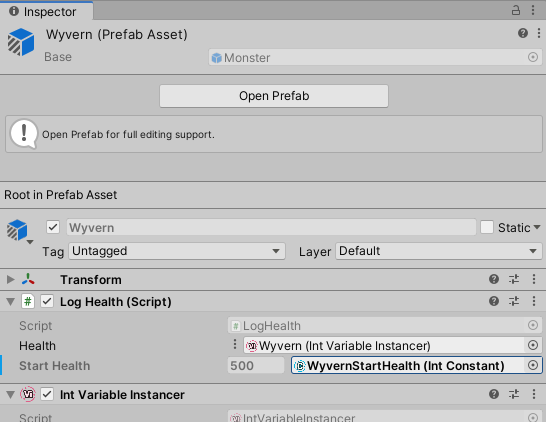

Variable Instancer
Unity Atoms have no problems with being used in a prefab. However, it will quickly become apparent that all instances of the prefab refer to the one and the same Atom asset, such as a specific IntVariable in the asset folder.
For example, changing the value of a Variable applies to all prefab instances that use the Variable. Triggering the Changed event also causes all prefab instances to react. While this still has it's uses, the behaviour is not always desirable.
To break free from global Atoms, Variables can be instantiated as an in-memory copy when a prefab is created. To do this, we need a VariableInstancer.
Note: A
VariableInstanceris unique to the type of the Variable. The generator can generate aVariableInstancerof any type needed. Unity Atoms comes with a set of predefined basic types.
Add a Variable Instancer and assign a base Variable
Start by creating an empty GameObject called Monster and add an Int Variable Instancer component to it:

The VariableInstancer needs a base Variable to instantiate. Create any IntVariable and use the inspector to add the variable to the Base field. You can also click on Create to use a shortcut for type-appropriate Variable creation from the instancer itself.

Listening for Changed event
The VariableInstancer instantiates the appropriate Changed and Changed With History event instances for this Variable. That's why it's possible to listen for the Changed event in an Int Event Reference Listener. Add an Int Event Reference Listener as a component and use the three dots next to Event Reference to select Use Variable Instancer:

Grabbing from the title of the component, drag the Int Variable Instancer on the Event Reference field:

This event listener now listens to the instantiated Changed event from the Int Variable Instancer.
Changed Event response
Let's add a simple script to use a method as a Unity Event Response in the listener:
using UnityEngine;
public class LogHealth : MonoBehaviour
{
public void ReportHealth(int health)
{
Debug.Log(gameObject.name + " reports: " +
"My health changed to " + health);
}
}
Add the LogHealth component and click + on the Unity Event Response, drag the LogHealth to the response field and choose the ReportHealth method from the list:

Note: If the method does not appear under the
Dynamicsection with the data type of the listener, the method signature is wrong. The Unity response method can only have one parameter which corresponds to the listener type. Using a method with static parameters will still get called, but won't have access to the event data.
Usage in a script
To demonstrate that the instancer works as intended, let's add a method to LogHealth that initializes the health value to a value from an IntConstant on Start. To use Variable Instancers the type of the health Variable is IntReference instead of IntVariable:
using UnityEngine;
using UnityAtoms.BaseAtoms;
public class LogHealth : MonoBehaviour
{
[SerializeField]
private IntReference health;
[SerializeField]
private IntConstant startHealth;
public void Start()
{
health.Value = startHealth.Value;
}
public void ReportHealth(int health)
{
Debug.Log(gameObject.name + " reports: " +
"My health changed to " + health);
}
}
In the inspector use the three dots next to Health of LogHealth and select Variable Instancer. As before, drag the same Variable Instancer on the field. Create an IntConstant Atom in your asset folder and name it. In this case, it is called DefaultStartHealth and has a value of 100:

Run the project. The Monster GameObject reports the health immediately on Start. Read the stack trace from bottom to up to see how the calls were made:

This however does not prove the instances are unique. You can achieve the same result with global Atoms. Let's see how we can use prefabs to make sure the instancer works.
Prefabs
Drag the Monster GameObject to an asset folder and create two Prefab Variants from the context menu of the Monster prefab. Name them Orc and Wyvern:

Create two more IntConstant Atoms called WyvernStartHealth and OrcStartHealth:

Open the Wyvern prefab variant and replace the DefaultStartHealth with WyvernStartHealth constant in the LogHealth script's inspector:

Do the same for the Orc variant and drag an instance of both on the scene and run the project. If everything went according to plan, the console should log the following messages:

Both Variable instances are therefore unique. You can now use the Variable Instancer as a Variable in any IntReference in your scripts. For example, a damage script would subtract from the Variable value and only this instance of the prefab would have it's Changed event triggered.